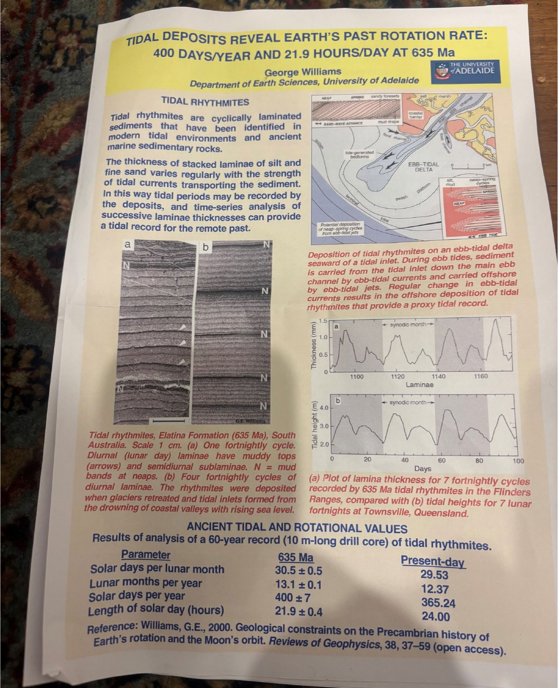
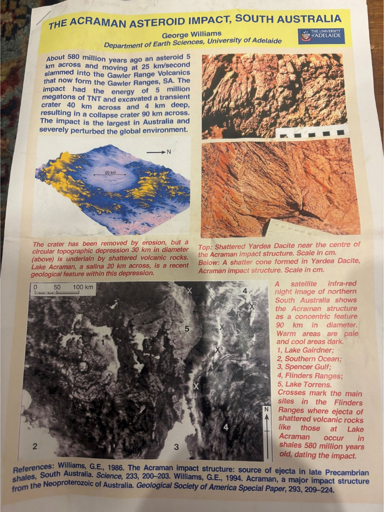
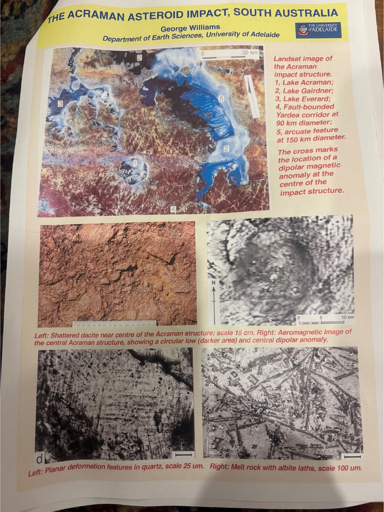
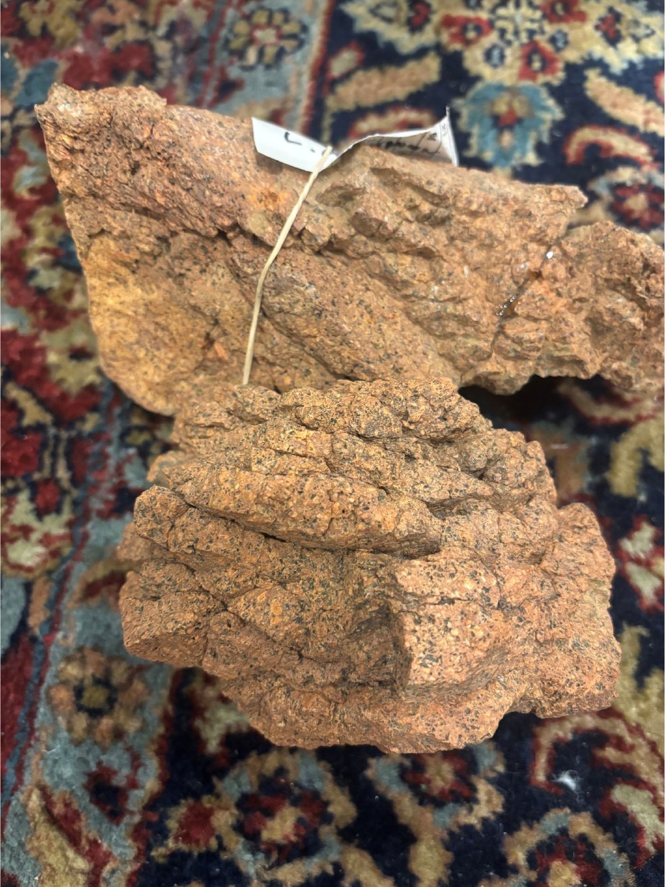
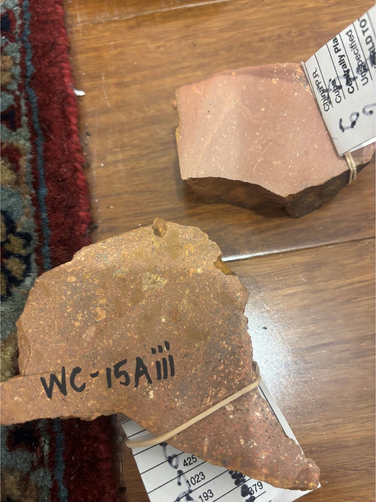
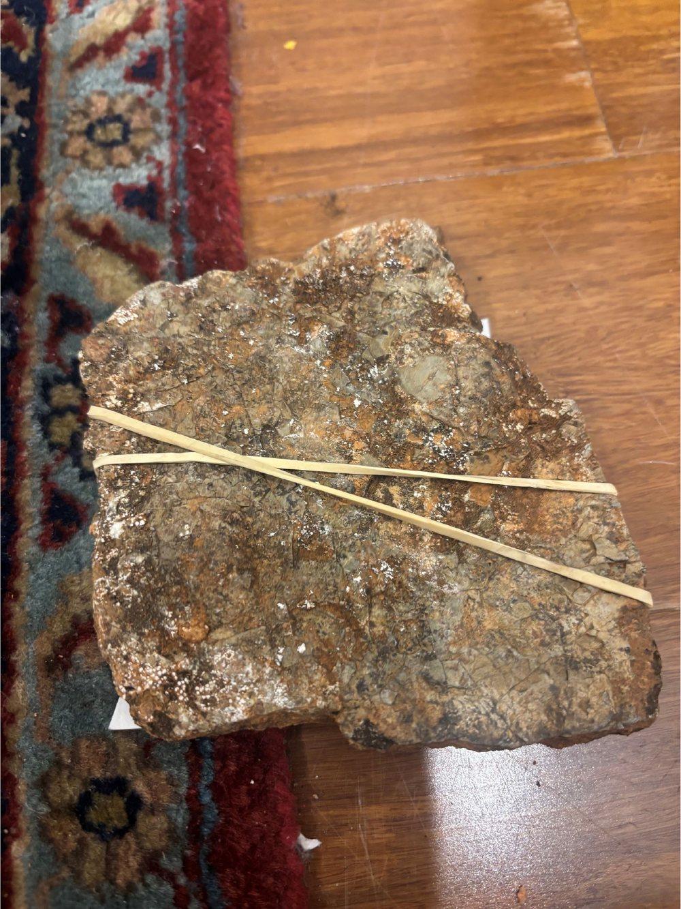
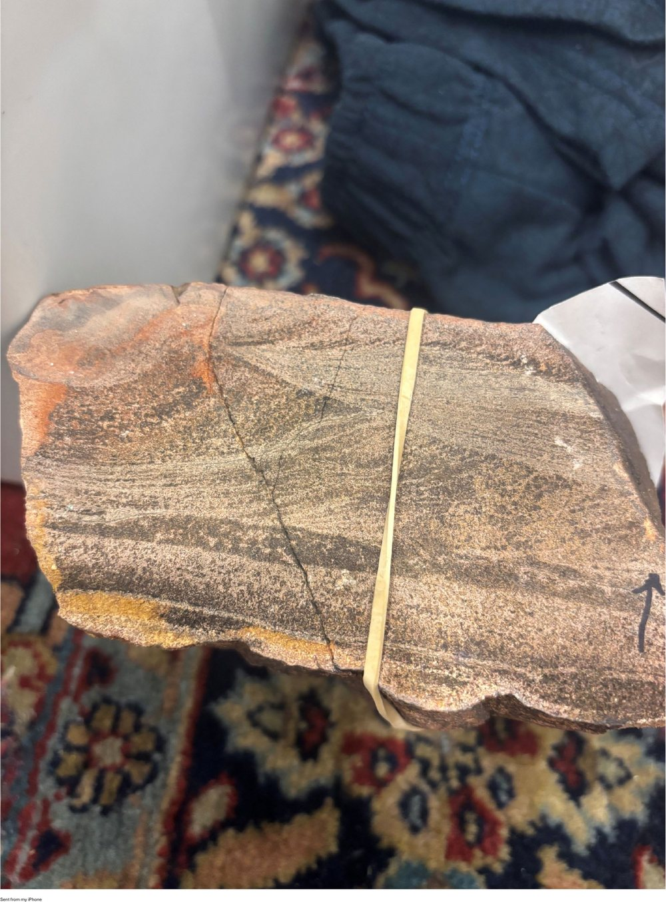

Year 7 Science · Space · Lesson 4 of 10
Reading the Rocks
Tides in stone, and the morning an asteroid hit South Australia.
Press → to begin.
Spaced retrieval · earlier lessons
Quick quiz
Answer from memory. Discuss with your partner before checking.
Booklet §4 · Overview
What we’re learning today
- Explain how a layered rock can record the tides, and therefore the Earth–Moon system
- Interpret a data table comparing Earth’s rotation now and 635 million years ago
- Explain tidal braking — why the day lengthens and the Moon recedes
- Describe the Acraman impact and the evidence that dates it
- I can state what one lamina in a tidal rhythmite represents
- I can state that a day was 21.9 hours long 635 million years ago
- I can explain why Earth’s spin is slowing and the Moon is moving away
- I can name two rock features that only an impact produces
Everything in this unit so far has been found by looking up. Today we look down. What could a rock possibly tell you about the Moon?
Part 1 of 2
Tides written in stone
In this part you will:
- Explain how tidal currents lay down a countable record
- Read the Elatina Formation data and state the length of a day at 635 Ma
- Explain tidal braking using the tidal bulge
- Say why the recession rate, not the distance, is the interesting result
Prof. George E. Williams, University of Adelaide · specimens courtesy of Stuart Williams
Entry task · Everyone can do this
We do What could you count in a rock?
In your booklet (p. 15), answer before we go any further:
This rock is made of hundreds of layers, each a fraction of a millimetre thick, and the thicknesses repeat in a pattern.
- What natural process could lay down a layer of sediment that regularly?
- What would counting the layers tell you?
Hint: you already know something that happens twice a day, and something else that happens twice a month.
Schematic tidal rhythmite. Each dark band is one tide; the bands fatten and thin over a fortnight.
Booklet p.15 · §4.1
Concept
A rock that recorded the tides
A tidal rhythmite is a sedimentary rock made of finely layered silt and sand, laid down by tidal currents in a tidal inlet.
- Each incoming tide drops a thin layer — a lamina
- A stronger tide carries more sediment, so it leaves a thicker lamina
- So lamina thickness runs through the fortnightly spring–neap cycle you met last lesson
A rhythmite is a recording of the tides, the way tree rings are a recording of years. Count the laminae from one neap to the next and you have the number of days in a lunar month — at the time the rock formed.
The Elatina Formation in the Flinders Ranges, South Australia, is a rhythmite 635 million years old. Prof. George Williams read a 10 m drill core holding a continuous 60-year record.

Research poster by Prof. George E. Williams, Dept of Earth Sciences, University of Adelaide. Photographed and provided by Stuart Williams.
Booklet p.15 · §4.1
The result
Earth, 635 million years ago
| Measurement | 635 million years ago | Today |
|---|---|---|
| Solar days per lunar month | 30.5 ± 0.5 | 29.53 |
| Lunar months per year | 13.1 ± 0.1 | 12.37 |
| Solar days per year | 400 ± 7 | 365.24 |
| Length of a solar day | 21.9 ± 0.4 hours | 24.00 hours |
Four hundred days in a year. Did Earth’s orbit around the Sun get faster — or did something else change?
Booklet p.15 · §4.1
Work through with the class
I do The year did not change — the day did
If Earth’s orbit is unchanged, then a year should be the same number of hours in both columns. Check it.
- Hours in a year, 635 Ma\(400 \times 21.9 = 8760\ \text{hours}\)
- Hours in a year, today\(365.24 \times 24.00 = 8766\ \text{hours}\)
- Difference\(\dfrac{8766 - 8760}{8766} = 0.0007 = 0.07\%\)
The two agree to better than a tenth of a percent. Earth took just as long to go round the Sun as it does now. It simply spun faster, so more days fitted into the same year.
Booklet p.15 · §4.1
Concept
Tidal braking — why the day is getting longer
The Moon raises a tidal bulge in Earth’s oceans. But Earth rotates faster than the Moon orbits, and friction drags that bulge slightly ahead of the Moon.
- The bulge pulls the Moon forwards — the Moon gains orbital energy and moves further away
- The Moon pulls back on the bulge — Earth loses rotational energy and the day gets longer
Energy is not destroyed, it is transferred: from Earth’s spin into the Moon’s orbit. That is tidal braking.
Laser reflectors left on the Moon by Apollo astronauts let us measure the recession directly today: 3.8 cm per year.
Booklet p.15 · §4.1
Your turn
You do Now you try
Working from the Elatina data, geologists put the Moon about 14,000 km closer to Earth at 635 million years ago than it is today.
Find the average recession rate over that time, in centimetres per year, and compare it with the 3.8 cm/year we measure now.
- Convert the distance to centimetres\(14{,}000\ \text{km} = 14{,}000 \times 100{,}000 = 1.4 \times 10^{9}\ \text{cm}\)
- Divide by the time\(\dfrac{1.4 \times 10^{9}\ \text{cm}}{6.35 \times 10^{8}\ \text{yr}} \approx 2.2\ \text{cm/yr}\)
- CompareToday’s rate is 3.8 cm/yr — nearly twice the long-run average.
- What this showsThe recession rate is not constant. Tidal friction depends on the shape of the ocean basins, and the continents drift.
Booklet p.15 · §4.1
Science as a human endeavour
Why a rock in the Flinders Ranges matters
Any explanation of where the Moon came from has to produce an orbit that behaves the way the rocks say it behaved.
- Assume today’s recession rate has always applied, wind the clock back, and you get an Earth–Moon history that does not fit a 4.5-billion-year-old Moon
- The rhythmites are one of very few direct measurements of the ancient Earth–Moon system
- So they are used to test the models rather than trust them
This is what evidence does in science. A model that cannot reproduce a measurement is in trouble, however elegant it is.
A Mars-sized body struck the young Earth and threw debris into orbit, which gathered into the Moon.
Its main support comes from elsewhere: the Moon has a tiny iron core for its size, and lunar rock chemistry matches Earth’s mantle almost exactly — as you would expect if the Moon is made of splashed-off Earth.
The rhythmites do not, on their own, prove the giant impact. They constrain the orbit. Evidence usually works like this — several independent lines, none decisive alone.
Part 2 of 2
The Acraman impact
In this part you will:
- Describe the scale of the Acraman impact
- Explain how an impact is dated when the crater has eroded away
- Identify the rock features that only an impact produces
- Examine four specimens from the impact and record what you see
Specimens collected by Prof. George E. Williams · provided by Stuart Williams
Entry task · Everyone can do this
We do What would be left behind?
In your booklet (p. 17):
An asteroid 5 km across hits South Australia. Then 580 million years of wind, rain and rivers go to work on the landscape.
List three things you would go looking for today as evidence that it happened.
Think about what would be destroyed by erosion, and what might survive because it is buried, or because it is spread over a very wide area.
Five kilometres is roughly the distance from Northcote to the middle of Melbourne. Now give it a speed of 25 kilometres every second — Melbourne to Sydney in under a minute.
Booklet p.17 · §4.2
Concept
580 million years ago, in the Gawler Ranges
An asteroid struck the volcanic rock that now forms the Gawler Ranges, South Australia. It is the largest known impact structure in Australia, and it disturbed the global environment.
| Diameter of the asteroid | ~5 km |
| Impact speed | 25 km/s |
| Energy released | 5 million megatons of TNT |
| Transient crater | 40 km across, 4 km deep |
| Final collapse crater | 90 km across |
| Ejecta found | up to 300 km away |
The hole first punched out was 40 km across, but the crater ended up 90 km across. What happened to the walls?

Research poster by Prof. George E. Williams, University of Adelaide. Provided by Stuart Williams.
Booklet p.17 · §4.2
Concept
How do you date a crater that has eroded away?
The crater is gone. What survives is a circular depression 30 km across, floored by shattered volcanic rock, with the salt lake Lake Acraman (20 km across) sitting inside it. Satellite infra-red imagery shows the wider structure as rings 90 km in diameter.
The impact was dated not from the crater but from the debris. Fragments of Gawler Ranges dacite — a volcanic rock found nowhere near the Flinders Ranges — turn up in Flinders Ranges shales 300 km away, in a layer 580 million years old. That layer dates the impact.
The same fallout horizon has been identified overseas. This was a global event.

Landsat and aeromagnetic imagery, shocked quartz and melt rock. Poster by Prof. George E. Williams; provided by Stuart Williams.
Booklet p.17 · §4.2
Concept
Rock that could not form any other way
At 25 km/s the asteroid delivers more energy than the rock can absorb as heat or motion, so the rock responds in ways it never does otherwise.
Rock breaks along cone-shaped fracture surfaces — shatter cones. Nothing else in geology makes them.
Rock beneath the impact point melts instantly and freezes again, losing all its original texture.
Quartz crystals develop planar deformation features — microscopic parallel lines that form only under shock pressure.
These are the fingerprints geologists use to identify an impact site anywhere on Earth — and to read the craters on the Moon.
Booklet p.17 · §4.2
Your turn
You do Handle the specimens
Four samples, all from the Acraman event. Handle each one, then complete the table in your booklet (p. 17).
Look for: grain size, angular fragments, colour, layering, and anything that looks as though it flowed.
- What can I see?
- What does that tell me about the impact?
The shattered and the melted dacite are the same rock — the difference between them is how much energy it absorbed.




Specimens collected by Prof. George E. Williams, University of Adelaide. Photographs by Stuart Williams, used with permission.
Booklet p.20 · Year 8 extension
Year 8 extension
How much closer was the Moon?
Kepler’s third law: the square of an orbital period is proportional to the cube of the orbital radius, so \(r \propto T^{2/3}\).
- The month was shorter13.1 months per year then, 12.37 now. The year is unchanged, so \(\dfrac{T_{635}}{T_{\text{now}}} = \dfrac{12.37}{13.1} = 0.944\)
- Apply Kepler\(\dfrac{r_{635}}{r_{\text{now}}} = 0.944^{2/3} = 0.963\)
- Convert to a distance\(0.963 \times 384{,}400 \approx 370{,}000\ \text{km}\) — about 14,000 km closer, or 3.7%
The Moon was not dramatically closer in the Precambrian — less than 4% closer. The interesting result is the rate, not the distance.
Lesson recap
What we covered
- A tidal rhythmite records the tides in layers: one lamina per tidal cycle, thickening and thinning over the spring–neap fortnight
- The Elatina Formation (635 Ma, Flinders Ranges) gives 400 days per year and a 21.9-hour day — the year was unchanged, Earth spun faster
- Tidal braking: the tidal bulge runs ahead of the Moon, so Earth’s spin slows and the Moon recedes — 3.8 cm/yr today, about 2.2 cm/yr averaged over 635 Myr
- The Acraman impact (580 Ma): a 5 km asteroid at 25 km/s, a 90 km crater, ejecta 300 km away
- The crater is eroded away; the impact is dated from the ejecta layer in Flinders Ranges shale
- Shatter cones, melt rock and shocked quartz are the fingerprints of an impact
Both halves of this lesson used South Australian rocks to find out about space. In one sentence each: what did the rhythmites tell us, and what did the dacite tell us?